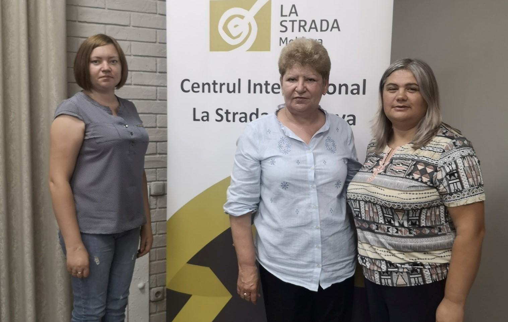
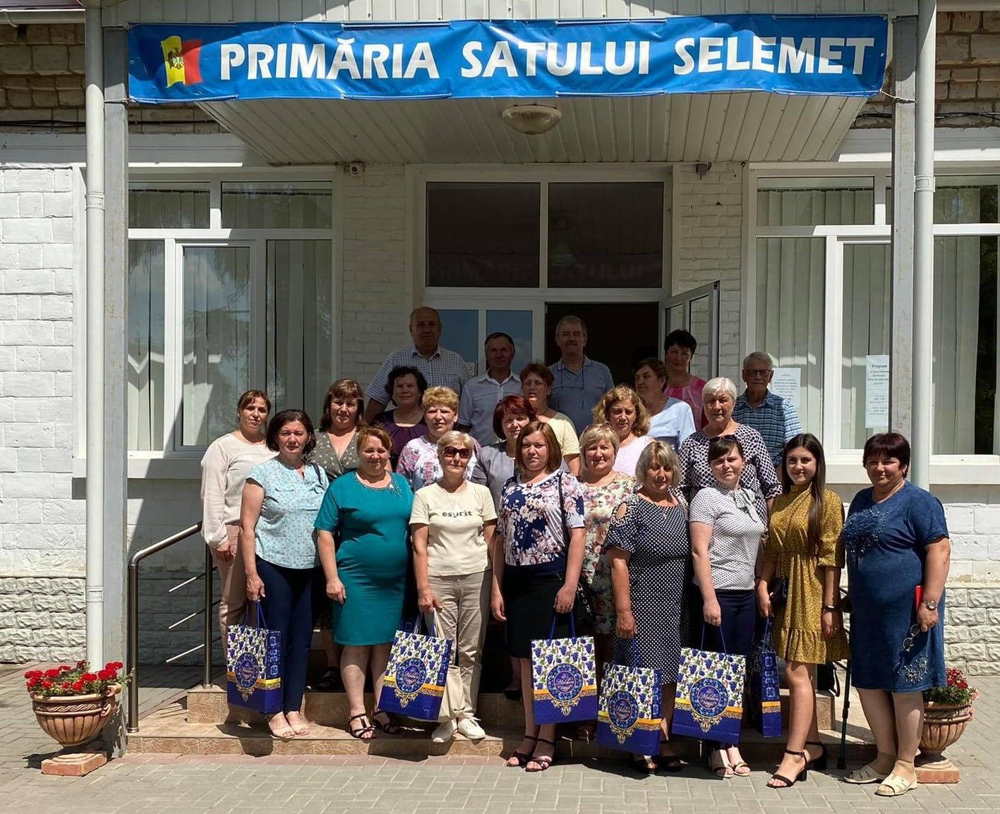
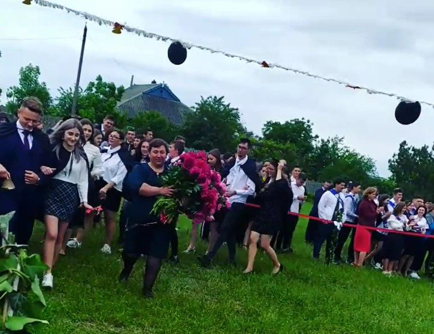

Evenimente
Donație de carte, august 2020

Maratonul de vaccinare împotriva infecției Covid-19
Stimați locuitori ai r-n Căușeni Sâmbătă data de 14.08.2021, Centrul de Sănătate Publică Căușeni, IMSP CS Căușeni, IMSP SR, „Ana și Alexandru” cu suportul Consiliul raional Căușeni, Primăria or. Căușeni organizează MARATONUL DE VACCINARE ÎMPOTRIVA INFECȚIEI Covid-19 , care va desfășura în localul Centrului sportiv multifuncțional (vizavi de Consiliul raional Căușeni) or. Căușeni str. Eminescu 29/A. Maratonul de vaccinare se va desfășura (14.08.2021) și în Punctele de vaccinare din cadrul Centrelor de Sănătate; Taraclia, Sălcuța, Căinari, Copanca, Fârlădeni Sunt invitați toți doritorii de a se vaccina împotriva infecţiei COVID-19, în intervalul de timp 800 – 1700, inclusiv persoanele care sau vaccinat cu prima doză în cadrul maratonului anterior din data de 24.07.2021 Vor fi disponibile următoarele feluri de vaccin anti-Covid-19; Pfizer BioNTech Johnson & Johnson Astra Zeneka Sinovac Sinopharm Vă așteptăm cu drag ! Multă Sănătate Vă dorim !
Admitere liceu 2021
AVIZ! Liceul Teoretic “Ştefan cel Mare şi Sfânt” s. Taraclia, r. Căuşeni Anunţă admiterea în anul de studii 2021 – 2022 în clasa X-a de liceu la profilul real şi uman. Depunerea documentelor va avea loc: I etapă - 12.07 - 23.07.2021 II etapă - 09.08 - 11.08.2021 Numărul de locuri vacante: Profil real – 25 locuri; Profil uman – 25 locuri. La admitere vor fi prezentate următoarele documente: 1. Cererea de înscriere cu indicarea profilului; 2. Certificatul de absolvire a gimnaziului (copie autentificată); 3. Buletin de identitate/ certificatul de naștere (copie); 4. Adeverinţa medicală; 5. 4 fotografii cu dimensiunile 3×4 cm. Direcţia L.T. “Ştefan cel Mare şi Sfânt” s. Taraclia
Atelierul cadrelor manageriale
12-14 august 2021. Formarea cadrelor manageriale, privind pilotarea ”Standardelor pentru Protecția și Siguranța Copiilor în Mediul Online”
Vizită de studiu
28 iunie 2021. Cadrele didactice au mers în vizită în s. Selemet, r. Cimișlia. Activitate în cadrul proiectului ”Împreună reducem riscurile”, susținut de Fundația Est Europeană.
Ultimul sunet
31 mai 2021. Sărbătoarea Ultimului sunet. Anul de studii 2020-2021 a fost un an cu multe provocări, dar și cu multe realizări frumoase. O zi cu multe emoții, care înscrie în istoria Liceului Teoretic ”Ștefan cel Mare și Sfânt” din s. Taraclia, rnul Căușeni frumoase amintiri. Drum bun în viață, dragi absolvenți! Să aveți o vacanță frumoasă, dragi elevi! Cu dorință de carte și energie pozitivă să revenim la 1 septembrie 2021.
